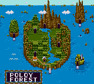
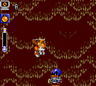
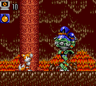
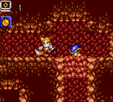
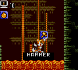

You are listening to: Password Screen - John Weeks
Yep, Tails runs the show alright, and it all starts off in his home in the forest, where our two-tailed friend is having a kip in the woods. When suddenly, the forest is set on fire. Tails is left wondering what is going on.
In the meantime, we see evil ducks (?) laughing with glee at the fact that they have set the woods alight. Tails sees them and figures he has to stop them. Like, now.
Contents
*Introduction*
*Release Date Facts*
*In Depth Information*
1 | 2 | 3 | 4
*Introduction*
 A Sonic game, with only Tails in it. In fact, you could say this is a Tails game, because that's who stars it. No Sonic. No Knuckles. Be proud Tails fans, especially Scott Prower and Roareye.
A Sonic game, with only Tails in it. In fact, you could say this is a Tails game, because that's who stars it. No Sonic. No Knuckles. Be proud Tails fans, especially Scott Prower and Roareye.
*Release Date Facts*

Released:
1995
Starring:
Tails
Platform:
Sega Game Gear
Game Genre/Type:
2D Puzzle Platformer
Format:
CartridgeFirst Appearances of:
Tails as the star, evil ducks, special items such as bombs and romote robots.
*In Depth Information*
|  | So, a game where Tails is the star. You don't see that everyday, and certainly the type of game that ties in with Tails Adventure. You see, it is a platformer, but it is also it has a kind of puzzle/RPG element to it, which adds to the interesting changes. The graphics are pretty tasty, and is much to the likeness of the graphics you would find in Sonic Triple Trouble.
|
|  |  |
|
The way the game works is this. You have a certain amount of 'hit points', the chances you have which decrease as you are attacked, before you die. These come in the lovely form of rings. You can collect more rings from boulders or enemies, should they be containing some in the first place. You have the standard jump button, which when double tapped makes Tails fly. There is a bar to the left as you are flying. This signifies the amount of flying time you have before you get tired, but you can collect items which boost this bar. Aswell as this you have an action button, which at the start has bombs as its default, when you press this button, it uses the item shown in the blue box. You can carry four special items between levels, pressing a certain button or direction when paused to switch to each respective item. |
|  | Each level has a certain amount of sections, and at the end of that level, you face a boss in many guises, for example, some 'evil ducks' sporting that little green number. You have to work out an attack pattern in order to defeat it, which usually requires your standard bombs, so you best keep them handy when you're choosing your four special items.
|
|  |  |  |
|
In sheer RPG-ness, you come across certain blue spiral things in your travels. If you find one of these, do not hesitate to walk over to it, as it contains a special item, which will be invaluable no-end to the success of your adventures. You may be lucky enough to find a Chaos emerald, which boosts the total amount of rings you can hold, and also increases your 'air time' bar, so you have a longer period to fly in the air without getting too tired. Other items include Remote Robots, which you lay and control to get through the tiniest places, and Hammers, just to lay it upon their ass. |